Open-source AI for municipal open records
Every city in America processes public records requests — and most staff still search file shares manually, review hundreds of pages by hand, and track deadlines in spreadsheets. CivicRecords AI changes that. It runs entirely inside your city's network, ingesting your documents and making them searchable with natural language AI queries, flagging potential exemptions, and managing the full request lifecycle from intake to response. No cloud subscription. No vendor lock-in. Your data never leaves the building.
Install Docker Desktop (required — not included in setup scripts)
docker.com/get-started
Clone & run the setup script
bash install.sh
Open your browser
http://localhost:8080
ⓘ A Windows double-click installer (unsigned, ships with every tagged release) handles the Docker-stack setup end-to-end. macOS and Linux continue to use the setup scripts below — Docker Desktop (macOS) or Docker Engine (Linux) must be installed first.



Seventeen integrated capabilities — all running locally, all under your control.
Natural language hybrid search combining pgvector semantic similarity and PostgreSQL full-text search via Reciprocal Rank Fusion. Results include source attribution and confidence scores. Optional LLM-synthesized answer summaries, clearly labeled as AI drafts.
Two-track pipeline handles PDF, DOCX, XLSX, CSV, email (.eml), HTML, and plain text. Scanned documents use Gemma 4 multimodal AI with Tesseract OCR fallback. Sentence-aware chunking with configurable overlap ensures context is never lost at chunk boundaries.
Rules-primary engine with built-in PII patterns — SSN, phone, email, credit card, date of birth — plus statutory keyword matching across all 50 states and DC (180 rules). Auditability dashboard tracks acceptance/rejection rates by category with CSV/JSON export. All flags require explicit human confirmation.
Full lifecycle tracking across 10 statuses: received, clarification needed, assigned, searching, in review, ready for release, drafted, approved, fulfilled, and closed. Deadline alerts surface approaching and overdue requests. Timeline, messaging, fee tracking, and AI-drafted response letters.
Hash-chained audit logs with SHA-256 tamper evidence and automatic archival. Human-in-the-loop enforced at the API layer — no auto-redaction, no auto-approval. Ships with 5 compliance templates: AI Use Disclosure, CAIA Impact Assessment, AI Governance Policy, Response Letter Disclosure, and Data Residency Attestation. Verification script confirms zero outbound data transmission.
Service account API keys (hashed before storage) enable authenticated REST access between CivicRecords AI instances. The foundation for cross-jurisdiction record discovery — a single staff member can query cooperating cities without leaving their own system.
Step-by-step setup wizard walks administrators through initial configuration — LLM model selection, department setup, user creation, and first document ingestion — so the system is production-ready in under an hour.
Structured registry of every record system your jurisdiction operates — file shares, databases, email archives, cloud drives. Each system tracks location, retention schedule, and responsible department, forming the backbone of responsive search.
Pluggable adapter architecture lets administrators connect CivicRecords AI directly to live record sources. Ships with four implemented connector types: file_system (local/mounted directories), manual_drop (watched drop folders), rest_api (generic REST API — API key / Bearer / OAuth2 / Basic; JSON/XML/CSV; page/offset/cursor pagination), and odbc (SQL databases via pyodbc, row-as-document with SQL-injection guards). Per-source cron scheduling (croniter, UTC) with configurable presets. Idempotent sync via content-hash dedup for binary sources and source-path dedup for structured sources. Roadmap: IMAP email, SMB/NFS, SharePoint.
Real-time metrics on request volume, average response time, exemption rates by category, and staff workload. Exportable reports help demonstrate statutory compliance and identify process bottlenecks before they become deadline violations.
AI-drafted response letters pre-populated with request details, responsive documents, and statutory exemption citations. Staff review and approve every letter before it leaves the system — the AI drafts, humans decide.
Configurable email and in-app alerts for deadline approach, assignment changes, and requester follow-ups. Notification rules are set per department so each team gets the alerts that matter to them — no noise, no missed deadlines.
Built on shadcn/ui with a consistent component library. Responsive shell: fixed 240px sidebar on desktop, hamburger-driven slide-in drawer below 768px with focus trap, ESC close, and auto-close on route change. Keyboard-navigable throughout. Admin forms use programmatic label↔input associations, role="alert" validation errors with actionable copy, role="radiogroup" for segmented choices, and 44px touch targets — targeting WCAG 2.2 AA. Every screen follows the same visual language so staff spend zero time learning a new UI paradigm.
Every request carries a full chronological timeline — intake, assignment, search queries, review actions, approvals, and response. Built-in secure messaging lets staff communicate with requesters and internal reviewers from within the request record.
Staff are scoped to their assigned department — they see only their department's requests, documents, and exemption flags. Admins retain full org-wide visibility. Department CRUD with audit logging ensures every access boundary change is tracked.
Five ready-to-use compliance documents ship with the product: AI Use Disclosure, Response Letter Disclosure Language, CAIA Impact Assessment, AI Governance Policy, and Data Residency Attestation. Templates render with your city profile data and are customizable by admins.
Per-record failure tracking with two-layer retry — task-level exponential backoff absorbs transient network errors; record-level retry handles persistent connector failures (up to 5 attempts over 7 days). Automatic circuit breaker suspends a source after 5 consecutive full-run failures and sends admin notifications. Health status (Healthy / Degraded / Circuit Open) displayed live on every source card. Admin UI surfaces failed records with bulk retry and dismiss actions, per-record history, and a one-click unpause path once the underlying issue is resolved.
Standard, well-supported open-source components. No proprietary runtimes. No licensing surprises.
Identical Docker containers on every OS. Install scripts included for each platform.
All platforms run identical Linux containers. Windows users get install.ps1; macOS and Linux users get install.sh.
Download, read the documentation, and evaluate CivicRecords AI for your city.
Free to use, modify, and distribute. All dependencies use permissive or weak-copyleft licenses — MIT, Apache 2.0, BSD, LGPL, MPL. No AGPL, SSPL, or BSL.